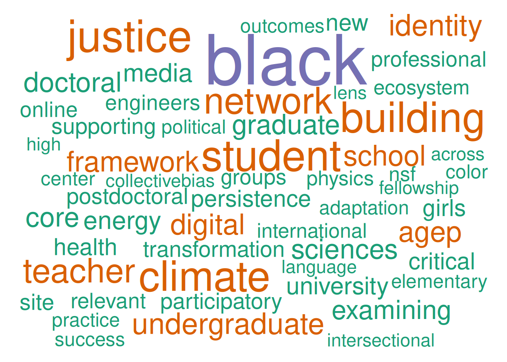
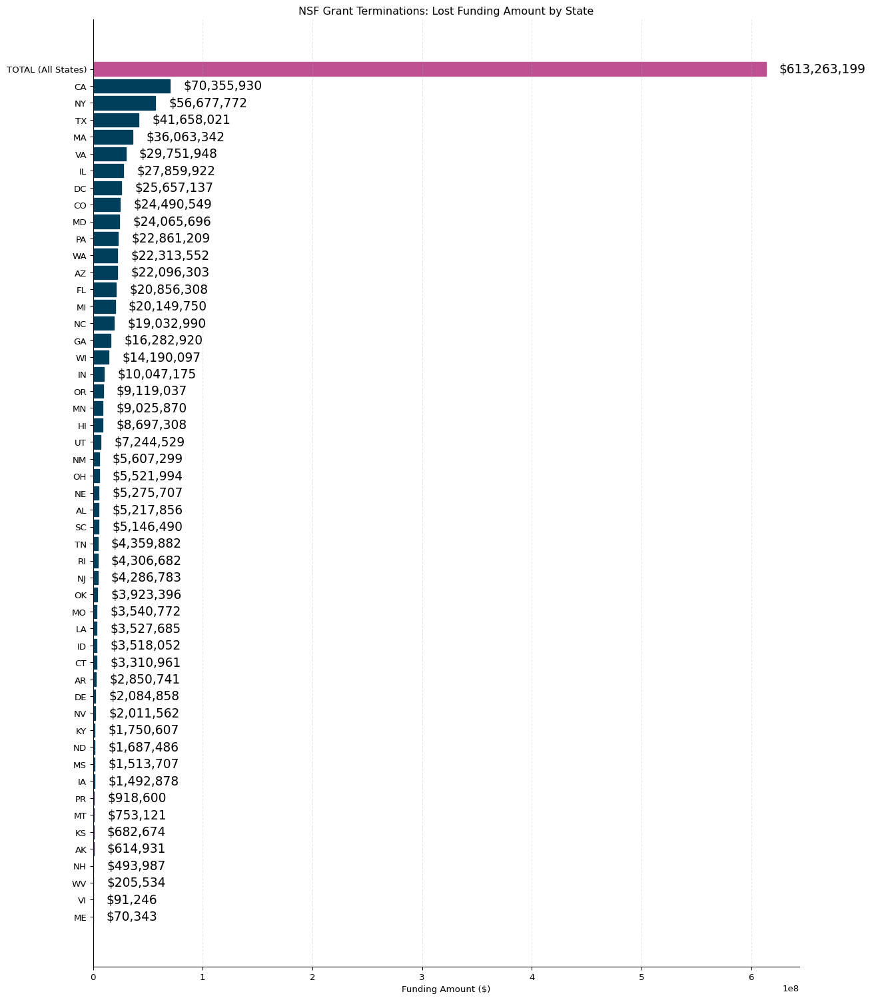

# import required libraries
import os
import PyDyTuesday
import pandas as pd
from great_tables import GT
# set working directory (only for line by line coding)
# comment out when rendering!
# os.getcwd()
# os.chdir(os.getcwd() + '/2025-05-06')Pydy Tuesday 2025-05-06

Data Source: This week we’re exploring a dataset of grants for scientific research and education projects from the U.S. National Science Foundation (NSF) that have been terminated by the Trump administration in 2025. In an unprecedented and possibly illegal action, the NSF has terminated over 1,000 such grants starting on April 18, 2025, and terminations continue. These data were collected by Grant Watch by crowdsourcing from researchers and program administrators, as the administration has not released information on these terminations.
Background
More information, as well as similar data on grant terminations from the National Institutes of Health (NIH), can be found at https://grant-watch.us.
Some questions you might explore are:
- How many grants, and how much money, were terminated by state or congressional district? What institutions? How can you present these on a map?
- Grants from what directorates, divisions, or programs made up most of the projects terminated?
- What topics or terms are most common in project titles or abstracts?
Additional links: More elaborate analysis could use data on total awards to look at the fraction of awards terminated, or data on educational institutions to look at what kinds of institutions are most affected.
Data Exploration
Set up
Download data
We can download the data using the PyDyTuesday library and specifying the date. This will load several files:
nsf_terminations.csv: data file.nsf_word_cloud.png: image file.meta.yaml: meta data file with information about the data files and the curator.readme.md: README file with information about this week’s data.
The data dictionary is located here
# Download files from the week, which you can then read in locally
PyDyTuesday.get_date('2025-05-06')
df = pd.read_csv("nsf_terminations.csv") # , encoding='latin-1'
df.head()meta.yaml downloaded
nsf-word-cloud.png downloaded
nsf_terminations.csv downloaded
readme.md downloaded| grant_number | project_title | termination_letter_date | org_name | org_city | org_state | org_district | usaspending_obligated | award_type | directorate_abbrev | ... | division | nsf_program_name | nsf_url | usaspending_url | nsf_startdate | nsf_expected_end_date | org_zip | org_uei | abstract | in_cruz_list | |
|---|---|---|---|---|---|---|---|---|---|---|---|---|---|---|---|---|---|---|---|---|---|
| 0 | 2135329 | Collaborative Research: Research: Early-Career... | 2025-04-25 | University of New Mexico | ALBUQUERQUE | NM | NM01 | 190725.0 | Standard Grant | ENG | ... | Engineering Education and Centers | ER2-Ethical & Responsible Res | https://www.nsf.gov/awardsearch/showAward?AWD_... | https://www.usaspending.gov/award/ASST_NON_213... | 2022-09-01 | 2025-04-18 | 871310001 | F6XLTRUQJEN4 | Transportation systems, computing algorithms, ... | True |
| 1 | 2342099 | MyTurn: An Afterschool Social Robotics Program... | 2025-04-25 | University of Illinois at Chicago | CHICAGO | IL | IL07 | 499999.0 | Standard Grant | EDU | ... | Research on Learning in Formal and Informal Se... | ITEST-Inov Tech Exp Stu & Teac | https://www.nsf.gov/awardsearch/showAward?AWD_... | https://www.usaspending.gov/award/ASST_NON_234... | 2024-08-15 | 2027-07-31 | 606124305 | W8XEAJDKMXH3 | Computational thinking and robotics are increa... | False |
| 2 | 2201103 | Collaborative Research: The Organizational Cli... | 2025-04-25 | American Society For Engineering Education | WASHINGTON | DC | DC00 | 124241.0 | Continuing Grant | EDU | ... | Equity for Excellence in STEM | ECR-EDU Core Research | https://www.nsf.gov/awardsearch/showAward?AWD_... | https://www.usaspending.gov/award/ASST_NON_220... | 2022-08-01 | 2026-07-31 | 200362476 | F6G9C4HMNHW4 | The ongoing lack of diversity in the engineeri... | True |
| 3 | 2215382 | Engaging Rural, Latinx Youth in an After Schoo... | 2025-04-25 | TERC Inc | CAMBRIDGE | MA | MA05 | 2601763.0 | Continuing Grant | EDU | ... | Research on Learning in Formal and Informal Se... | AISL | https://www.nsf.gov/awardsearch/showAward?AWD_... | https://www.usaspending.gov/award/ASST_NON_221... | 2022-08-01 | 2026-07-31 | 21401339 | GSLCJ3M62XX1 | The project will develop and research an after... | True |
| 4 | 2405633 | Design Effective and Equitable Professional Le... | 2025-04-25 | San Francisco State University | SAN FRANCISCO | CA | CA11 | 565771.0 | Continuing Grant | EDU | ... | Research on Learning in Formal and Informal Se... | Discovery Research K-12 | https://www.nsf.gov/awardsearch/showAward?AWD_... | https://www.usaspending.gov/award/ASST_NON_240... | 2024-10-01 | 2028-09-30 | 941321740 | F4SLJ5WF59F6 | Providing computer science (CS) education to s... | False |
5 rows × 21 columns
Data Wrangling
Let’s do some data wrangling to look at the amount of funding cut by state (and total).
import numpy as np
# Drop missing values
df_clean = df.dropna(subset=["usaspending_obligated", "org_state", "award_type"])
#Aggregate funding by state
funding_by_state = df_clean.groupby('org_state')['usaspending_obligated'].sum().reset_index()
# Calculate the total funding amount across all states
total_funding = df_clean['usaspending_obligated'].sum()
# Add a "Total" row at the beginning
total_row = pd.DataFrame({'org_state': ['TOTAL (All States)'], 'usaspending_obligated': [total_funding]})
funding_by_state = pd.concat([total_row, funding_by_state], ignore_index=True)
# Sort in descending order
funding_by_state = funding_by_state.sort_values('usaspending_obligated', ascending=True)
# Take the top 20 states (including the TOTAL row)
#top_entries = funding_by_state.head(20)
# Format the funding amounts for display (add commas and $ signs)
funding_by_state['formatted_amount'] = funding_by_state['usaspending_obligated'].apply(
lambda x: f"${x:,.0f}"
)
# Highlight the total row differently
funding_by_state['is_total'] = funding_by_state['org_state'] == 'TOTAL (All States)'
funding_by_state| org_state | usaspending_obligated | formatted_amount | is_total | |
|---|---|---|---|---|
| 22 | ME | 70343.0 | $70,343 | False |
| 47 | VI | 91246.0 | $91,246 | False |
| 50 | WV | 205534.0 | $205,534 | False |
| 31 | NH | 493987.0 | $493,987 | False |
| 1 | AK | 614931.0 | $614,931 | False |
| 17 | KS | 682674.0 | $682,674 | False |
| 27 | MT | 753121.0 | $753,121 | False |
| 40 | PR | 918600.0 | $918,600 | False |
| 13 | IA | 1492878.0 | $1,492,878 | False |
| 26 | MS | 1513707.0 | $1,513,707 | False |
| 29 | ND | 1687486.0 | $1,687,486 | False |
| 18 | KY | 1750607.0 | $1,750,607 | False |
| 34 | NV | 2011562.0 | $2,011,562 | False |
| 9 | DE | 2084858.0 | $2,084,858 | False |
| 3 | AR | 2850741.0 | $2,850,741 | False |
| 7 | CT | 3310961.0 | $3,310,961 | False |
| 14 | ID | 3518052.0 | $3,518,052 | False |
| 19 | LA | 3527685.0 | $3,527,685 | False |
| 25 | MO | 3540772.0 | $3,540,772 | False |
| 37 | OK | 3923396.0 | $3,923,396 | False |
| 32 | NJ | 4286783.0 | $4,286,783 | False |
| 41 | RI | 4306682.0 | $4,306,682 | False |
| 43 | TN | 4359882.0 | $4,359,882 | False |
| 42 | SC | 5146490.0 | $5,146,490 | False |
| 2 | AL | 5217856.0 | $5,217,856 | False |
| 30 | NE | 5275707.0 | $5,275,707 | False |
| 36 | OH | 5521994.0 | $5,521,994 | False |
| 33 | NM | 5607299.0 | $5,607,299 | False |
| 45 | UT | 7244529.0 | $7,244,529 | False |
| 12 | HI | 8697308.0 | $8,697,308 | False |
| 24 | MN | 9025870.0 | $9,025,870 | False |
| 38 | OR | 9119037.0 | $9,119,037 | False |
| 16 | IN | 10047175.0 | $10,047,175 | False |
| 49 | WI | 14190097.0 | $14,190,097 | False |
| 11 | GA | 16282920.0 | $16,282,920 | False |
| 28 | NC | 19032990.0 | $19,032,990 | False |
| 23 | MI | 20149750.0 | $20,149,750 | False |
| 10 | FL | 20856308.0 | $20,856,308 | False |
| 4 | AZ | 22096303.0 | $22,096,303 | False |
| 48 | WA | 22313552.0 | $22,313,552 | False |
| 39 | PA | 22861209.0 | $22,861,209 | False |
| 21 | MD | 24065696.0 | $24,065,696 | False |
| 6 | CO | 24490549.0 | $24,490,549 | False |
| 8 | DC | 25657137.0 | $25,657,137 | False |
| 15 | IL | 27859922.0 | $27,859,922 | False |
| 46 | VA | 29751948.0 | $29,751,948 | False |
| 20 | MA | 36063342.0 | $36,063,342 | False |
| 44 | TX | 41658021.0 | $41,658,021 | False |
| 35 | NY | 56677772.0 | $56,677,772 | False |
| 5 | CA | 70355930.0 | $70,355,930 | False |
| 0 | TOTAL (All States) | 613263199.0 | $613,263,199 | True |
Data Visualization
Now, let’s create a horizontal bar chart looking at the funding cuts.
import matplotlib.pyplot as plt
# Create a figure with appropriate size
plt.figure(figsize=(14, 16))
# Create horizontal bars - y position corresponds to state names
y_pos = range(len(funding_by_state))
bars = plt.barh(y_pos, funding_by_state['usaspending_obligated'])
# Color the TOTAL bar differently
bars[50].set_color('#bc5090')
for i in range(0, len(bars)-1):
bars[i].set_color('#003f5c')
# Add formatted amounts next to the bars
max_value = funding_by_state['usaspending_obligated'].max()
for i, value in enumerate(funding_by_state['usaspending_obligated']):
plt.text(
value + max_value * 0.02, # Consistent spacing from bar end
i, # Y position (bar index)
funding_by_state['formatted_amount'].iloc[i], # Formatted monetary value
va='center', # Center vertically
ha='left', # Left-align text
fontsize=14 # Slightly smaller text
)
# Set y-tick labels to state names
plt.yticks(y_pos, funding_by_state['org_state'])
# Add labels and title
plt.xlabel('Funding Amount ($)')
plt.title('NSF Grant Terminations: Lost Funding Amount by State')
# Remove top and right spines for cleaner look
plt.gca().spines['top'].set_visible(False)
plt.gca().spines['right'].set_visible(False)
plt.grid(axis='x', linestyle='--', alpha=0.3)
plt.tight_layout(pad=2.0)
# Display the plot
plt.show()